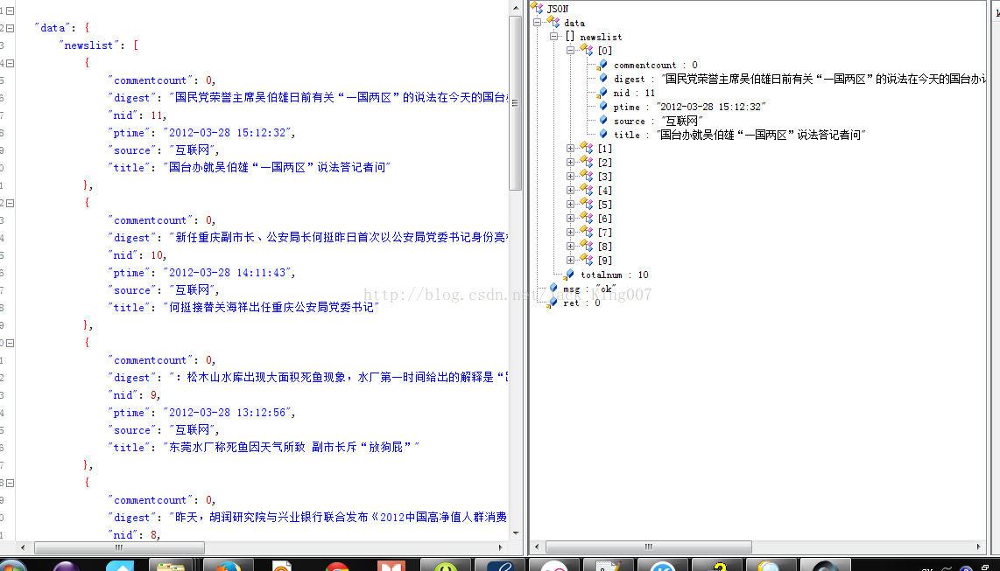

高仿新闻教程——加入网络数据（7）
这一节新闻教程，比较长，因为涉及到联网和json解析，这里的代码
联网工具 有httpclient和HttpConnnection或者xutils 都可以只要你喜欢 随君选择，但是在这一篇开头我就说了，此片文章我将会不用任何工具，所以联网工具类，我用的是Httpclient。
我尽量一步一步解析清楚，毕竟这一节如果讲清楚那就很麻烦了，因为联网和JSON都会讲很久
HttpUtils类 会得到一个json字符串
package com.xiaoxin.news.util;
import java.io.BufferedReader;
import java.io.InputStream;
import java.io.InputStreamReader;
import org.apache.http.HttpEntity;
import org.apache.http.HttpResponse;
import org.apache.http.client.HttpClient;
import org.apache.http.client.methods.HttpGet;
import org.apache.http.impl.client.DefaultHttpClient;
public class HttpUtils {
public static String getData(String url) throws Exception {
StringBuffer sb = new StringBuffer();
// 1. 创建HttpClient对象。
HttpClient httpClient = new DefaultHttpClient();
// 2. 创建请求方法的实例，并指定请求URL。如果需要发送GET请求，创建HttpGet对象；如果需要发送POST请求，创建HttpPost对象。
HttpGet httpGet = new HttpGet(url);
// 3. 调用HttpClient对象的execute(HttpUriRequest request)发送请求，该方法返回一个HttpResponse。
HttpResponse httpResponse = httpClient.execute(httpGet);
// 4.获得该响应消息的实体
HttpEntity httpEntity = httpResponse.getEntity();
if (httpEntity != null) {
//5.得到一个json的流 你需要把他转成流
InputStream instream = httpEntity.getContent();
//6.得到是一个字节流 用BufferedReader存到混存六中
BufferedReader reader = new BufferedReader(new InputStreamReader(
instream));
String line = null;
while ((line = reader.readLine()) != null) {
sb.append(line);
}
//7.最后得到一个用toString得到String
return sb.toString();
}
return null;
}
}到这里的时候，我想把array文件中的内容改了<?xml version="1.0" encoding="utf-8"?>
<resources>
<string-array name="categories">
<item>1|焦点</item>
<item>2|国内</item>
<item>3|国际</item>
<item>4|军事</item>
<item>5|体育</item>
<item>6|科技</item>
<item>7|汽车</item>
<item>8|财经</item>
<item>9|游戏</item>
<item>10|女人</item>
</string-array>
</resources>
这样我们就可以通过点击 上面的标题栏 来改变显示内容，但是我突然发现 显示不了标题栏了，尼玛。。。。。。但是内容可以解析出来，这个问题就很诡异....
//获取新闻分类
String[] categoryArray = getResources().getStringArray(R.array.categories);
//把新闻分类保存到List中
final List<HashMap<String, Category>> categories = new ArrayList<HashMap<String, Category>>();
//分割新闻类型字符串
for(int i=0;i<categoryArray.length;i++)
{
String[] temp = categoryArray[i].split("[|]");
if (temp.length==2)
{
int cid = StringUtil.String2Int(temp[0]);
String title = temp[1];
Category type = new Category(cid, title);
HashMap<String, Category> hashMap = new HashMap<String, Category>();
hashMap.put("category_title", type);
categories.add(hashMap);
}
}通过正则表达式 将ID和title分开了 用map集合存起来 这样就可以使用simpleadapter 将数据显示出来 上面有一个实体类，Category 也就是ID 和title 不过我把同tostring改了直接输出 title
package com.xiaoxin.news.custom;
public class Category
{
//类型编号
private int cid;
//类型名称
private String title;
//类型次数
private int sequnce;
public Category()
{
super();
}
public Category(int cid, String title)
{
super();
this.cid = cid;
this.title = title;
}
public Category(int cid, String title, int sequnce)
{
super();
this.cid = cid;
this.title = title;
this.sequnce = sequnce;
}
public int getCid()
{
return cid;
}
public void setCid(int cid)
{
this.cid = cid;
}
public String getTitle()
{
return title;
}
public void setTitle(String title)
{
this.title = title;
}
public int getSequnce()
{
return sequnce;
}
public void setSequnce(int sequnce)
{
this.sequnce = sequnce;
}
@Override
public String toString()
{
return title;
}
}
然后通过联网工具类得到的json 进行解析 其中ID 我默认选择第一个
//默认选中的新闻分类
mCid = 1;
好了 我们再看怎么解析 JSON吧 getSpeCateNews类
先看json的格式

当然你可以GSON fastjson jackjson 但是 我这里用的就是自带json解析
因为json工具格式化的时候 还少了一个花括弧（大括号}）
可以看出第一层是 { } 只要是大括号就用jsonobject
JSONObject jsonObject = new JSONObject(retStr);
然后就会得到大括号里面的内容 然后再取出在通过getInt 得到ret 通过 getObject得到data里面的内容
//获取返回码，0表示成功
int retCode = jsonObject.getInt("ret"); 如果成功在获取data里面的内容 json解析就是剥洋葱 一层一层拨开 取出我们想要的内容存到集合里面去
如果遇到[]中括号 就用jsonArray 获取里面的内容 后面的解析 我就不叙述了，相信大家能够举一反三
/**
* 获取指定类型的新闻列表
* @param cid 类型ID
* @param newsList 保存新闻信息的集合
*/
private List<HashMap<String, Object>> getSpeCateNews(int cid)
{
List<HashMap<String, Object>> newsList = new ArrayList<HashMap<String, Object>>();
String url = "http://192.168.1.12:8080/web/getSpecifyCategoryNews?cid="+cid+"&startnid=0&count=10";
try
{
String retStr = HttpUtils.getData(url);
System.out.println(retStr);
//以Get方式请求，并获得返回结果
JSONObject jsonObject = new JSONObject(retStr);
//获取返回码，0表示成功
int retCode = jsonObject.getInt("ret");
if (0==retCode)
{
JSONObject dataObject = jsonObject.getJSONObject("data");
//获取返回数目
int totalnum = dataObject.getInt("totalnum");
if (totalnum>0)
{
//获取返回新闻集合
JSONArray newslist = dataObject.getJSONArray("newslist");
for(int i=0;i<newslist.length();i++)
{
JSONObject newsObject = (JSONObject)newslist.opt(i);
HashMap<String, Object> hashMap = new HashMap<String, Object>();
hashMap.put("nid", newsObject.getInt("nid"));
hashMap.put("newslist_item_title", newsObject.getString("title"));
hashMap.put("newslist_item_digest", newsObject.getString("digest"));
hashMap.put("newslist_item_source", newsObject.getString("source"));
hashMap.put("newslist_item_ptime", newsObject.getString("ptime"));
newsList.add(hashMap);
}
}
else
{
Toast.makeText(MainActivity.this, "该栏目下暂时没有新闻", Toast.LENGTH_LONG).show();
}
}
else
{
Toast.makeText(MainActivity.this, "获取新闻失败", Toast.LENGTH_LONG).show();
}
} catch (Exception e)
{
e.printStackTrace();
Toast.makeText(MainActivity.this, "获取新闻失败", Toast.LENGTH_LONG).show();
}
return newsList;
}
通过json解析 我们会得到一个一个list集合内容
<span style="font-size:18px;">newsList</span>
<span style="color:#FF0000;">然后放入simpleadapter第二个参数 第三个参数就是放集合里面 要传递的数据 </span>
new String[]{"newslist_item_title","newslist_item_digest","newslist_item_source","newslist_item_ptime"},
<span style="color:#CC0000;">第四个是数据要填充的 组件ID</span>
new int[]{R.id.newslist_item_title,R.id.newslist_item_digest,R.id.newslist_item_source,R.id.newslist_item_ptime});
最后 看下全部代码吧
package com.xiaoxin.news.activity;
import java.util.ArrayList;
import java.util.HashMap;
import java.util.List;
import org.json.JSONArray;
import org.json.JSONObject;
import android.app.Activity;
import android.content.Intent;
import android.graphics.Color;
import android.graphics.drawable.ColorDrawable;
import android.os.Bundle;
import android.view.Gravity;
import android.view.View;
import android.view.View.OnClickListener;
import android.view.ViewGroup.LayoutParams;
import android.widget.AdapterView;
import android.widget.AdapterView.OnItemClickListener;
import android.widget.Button;
import android.widget.GridView;
import android.widget.HorizontalScrollView;
import android.widget.LinearLayout;
import android.widget.ListView;
import android.widget.SimpleAdapter;
import android.widget.TextView;
import android.widget.Toast;
import com.xiaoxin.news.custom.Category;
import com.xiaoxin.news.custom.CustomSimpleAdapter;
import com.xiaoxin.news.util.DensityUtil;
import com.xiaoxin.news.util.HttpUtils;
import com.xiaoxin.news.util.StringUtil;
public class MainActivity extends Activity
{
private final int COLUMNWIDTHPX = 55;
private final int FLINGVELOCITYPX = 800; // 滚动距离
private int mColumnWidthDip;
private int mFlingVelocityDip;
private int mCid;
private ListView mNewsList;
private SimpleAdapter mNewsListAdapter;
@Override
public void onCreate(Bundle savedInstanceState)
{
super.onCreate(savedInstanceState);
setContentView(R.layout.main);
//把px转换成dip
mColumnWidthDip = DensityUtil.px2dip(this, COLUMNWIDTHPX);
mFlingVelocityDip = DensityUtil.px2dip(this, FLINGVELOCITYPX);
//获取新闻分类
String[] categoryArray = getResources().getStringArray(R.array.categories);
//把新闻分类保存到List中
final List<HashMap<String, Category>> categories = new ArrayList<HashMap<String, Category>>();
//分割新闻类型字符串
for(int i=0;i<categoryArray.length;i++)
{
String[] temp = categoryArray[i].split("[|]");
if (temp.length==2)
{
int cid = StringUtil.String2Int(temp[0]);
String title = temp[1];
Category type = new Category(cid, title);
HashMap<String, Category> hashMap = new HashMap<String, Category>();
hashMap.put("category_title", type);
categories.add(hashMap);
}
}
//默认选中的新闻分类
mCid = 1;
//创建Adapter，指明映射字段
CustomSimpleAdapter categoryAdapter = new CustomSimpleAdapter(this, categories, R.layout.category_title, new String[]{"category_title"}, new int[]{R.id.category_title});
GridView category = new GridView(this);
category.setColumnWidth(mColumnWidthDip);//每个单元格宽度
category.setNumColumns(GridView.AUTO_FIT);//单元格数目
category.setGravity(Gravity.CENTER);//设置对其方式
//设置单元格选择是背景色为透明，这样选择时就不现实黄色北京
category.setSelector(new ColorDrawable(Color.TRANSPARENT));
//根据单元格宽度和数目计算总宽度
int width = mColumnWidthDip * categories.size();
LayoutParams params = new LayoutParams(width, LayoutParams.FILL_PARENT);
//更新category宽度和高度，这样category在一行显示
category.setLayoutParams(params);
//设置适配器
category.setAdapter(categoryAdapter);
//把category加入到容器中
LinearLayout categoryList = (LinearLayout) findViewById(R.id.category_layout);
categoryList.addView(category);
//添加单元格点击事件
category.setOnItemClickListener(new OnItemClickListener()
{
@Override
public void onItemClick(AdapterView<?> parent, View view, int position, long id)
{
TextView categoryTitle;
//恢复每个单元格背景色
for (int i = 0; i < parent.getChildCount(); i++)
{
categoryTitle = (TextView) (parent.getChildAt(i));
categoryTitle.setBackgroundDrawable(null);
categoryTitle.setTextColor(0XFFADB2AD);
}
//设置选择单元格的背景色
categoryTitle = (TextView) (parent.getChildAt(position));
categoryTitle.setBackgroundResource(R.drawable.categorybar_item_background);
categoryTitle.setTextColor(0XFFFFFFFF);
}
});
// 箭头
final HorizontalScrollView categoryScrollview = (HorizontalScrollView) findViewById(R.id.category_scrollview);
Button categoryArrowRight = (Button) findViewById(R.id.category_arrow_right);
categoryArrowRight.setOnClickListener(new OnClickListener()
{
@Override
public void onClick(View v)
{
categoryScrollview.fling(DensityUtil.px2dip(MainActivity.this, mFlingVelocityDip));
}
});
//获取指定栏目的新闻列表
List<HashMap<String, Object>> newsData = getSpeCateNews(mCid);
mNewsListAdapter = new SimpleAdapter(this, newsData, R.layout.newslist_item,
new String[]{"newslist_item_title","newslist_item_digest","newslist_item_source","newslist_item_ptime"},
new int[]{R.id.newslist_item_title,R.id.newslist_item_digest,R.id.newslist_item_source,R.id.newslist_item_ptime});
mNewsList = (ListView)findViewById(R.id.newslist);
mNewsList.setAdapter(mNewsListAdapter);
mNewsList.setOnItemClickListener(new OnItemClickListener()
{
@Override
public void onItemClick(AdapterView<?> parent, View view, int position, long id)
{
Intent intent = new Intent(MainActivity.this, NewsDetailsActivity.class);
startActivity(intent);
}
});
}
/**
* 获取指定类型的新闻列表
* @param cid 类型ID
* @param newsList 保存新闻信息的集合
*/
private List<HashMap<String, Object>> getSpeCateNews(int cid)
{
List<HashMap<String, Object>> newsList = new ArrayList<HashMap<String, Object>>();
String url = "http://192.168.1.12:8080/web/getSpecifyCategoryNews?cid="+cid+"&startnid=0&count=10";
try
{
String retStr = HttpUtils.getData(url);
System.out.println(retStr);
//以Get方式请求，并获得返回结果
JSONObject jsonObject = new JSONObject(retStr);
//获取返回码，0表示成功
int retCode = jsonObject.getInt("ret");
if (0==retCode)
{
JSONObject dataObject = jsonObject.getJSONObject("data");
//获取返回数目
int totalnum = dataObject.getInt("totalnum");
if (totalnum>0)
{
//获取返回新闻集合
JSONArray newslist = dataObject.getJSONArray("newslist");
for(int i=0;i<newslist.length();i++)
{
JSONObject newsObject = (JSONObject)newslist.opt(i);
HashMap<String, Object> hashMap = new HashMap<String, Object>();
hashMap.put("nid", newsObject.getInt("nid"));
hashMap.put("newslist_item_title", newsObject.getString("title"));
hashMap.put("newslist_item_digest", newsObject.getString("digest"));
hashMap.put("newslist_item_source", newsObject.getString("source"));
hashMap.put("newslist_item_ptime", newsObject.getString("ptime"));
newsList.add(hashMap);
}
}
else
{
Toast.makeText(MainActivity.this, "该栏目下暂时没有新闻", Toast.LENGTH_LONG).show();
}
}
else
{
Toast.makeText(MainActivity.this, "获取新闻失败", Toast.LENGTH_LONG).show();
}
} catch (Exception e)
{
e.printStackTrace();
Toast.makeText(MainActivity.this, "获取新闻失败", Toast.LENGTH_LONG).show();
}
return newsList;
}
}最后我将把数据库和服务器 端 客户端源码全部上传 数据库 是一个sql文件 你只需要直接在mysql导入即可 ，服务器端 直接在 myeclipse中配置用tomcat里面运行就行了